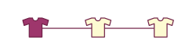
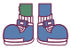
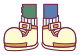

Bergschoenen
Deze bergschoenen zijn licht en hebben een goede sterke onderzool. Deze schoenen staan bekend om de kleurrijke uitstraling.

Blauwe sneakers
Blauwe sneakers zijn een tijdloze keuze die stijl en veelzijdigheid combineert. Met hun levendige blauwe tinten brengen ze een vleugje kleur in elke outfit.

Witte sneakers
Crème sneakers met gele accenten combineren elegantie met een vleugje speelsheid. De crèmekleurige basis van de schoen straalt een tijdloze, subtiele stijl uit, terwijl de gele accenten zorgen voor een levendige en opvallende twist.